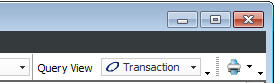
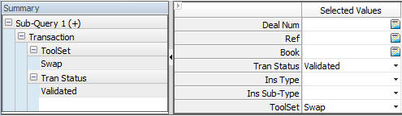
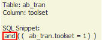

In this example, create a query to search for all Swap deals with a status of Validated. By choosing two different value types, you are creating an “and” conditional.
When a query is executed, the criteria entered for different fields (such as ToolSet and Tran Status) takes an AND relationship.
The following example brings back Swap transactions with a status of Validated.
To run a query:
1. Click the Query icon from the menu. The Trades Query window displays with a previously-saved query view.
2. Click the New Query icon , or select FileàNew Query from the main menu.
3. Ensure Transaction is displayed in the Query View field located at the top right-hand side of the panel. This is because the selections for this query are located in the Transaction table.

4. Go to the Tran Status field and select Validated.
5. Go to the ToolSet field and right-click in the Selected Values column to display the pick list. Select Swap, and then click the OK button.

Hover over the ToolSet field to see the snippet that indicates that the system sees this as an and conditional.

6. Execute the query by clicking the Execute and Close button. The query results display.